Metabolic Networks
Biochemical pathways of metabolism
We can consider cellular metabolism as a network of homeostatically feedback metabolic pathways. If we zoom in on any of the biochemical reactions involved in this complex web, we can identify a black box common to all of them:
Although the representation above may involve equilibrium reactions (double arrows), or even the absence of a catalyst, the image generalizes individual biochemical reactions that are part of any metabolic map. If we now wish to evaluate the consumption of compound A (reactant, substrate) and the resulting formation of compound B (product), that is, the levels of the compounds in a time interval, we can consider, as seen in the chapter on Enzymes), the reaction above as 1st order in both reactant and product:
\[ A \begin{array}{c} _{k}\\ \rightarrow \\ ^{}\end{array} B \tag{1}\]
Thus, the reaction rate can be considered as the variation of A or B over time as:
\[ v=\frac{dy}{dx}=-\frac{dA}{dt}=\frac{dB}{dt} \tag{2}\]
In other words, when there is consumption, the rate of variation is negative, and when there is formation, it is positive. Separating the two rates:
\[ \frac{dA}{dt}= -k*A;\\ \frac{db}{dt} = k*B \tag{3}\]
And thus, to calculate the variation in each compound over a time interval:
\[ dA=-k*A*dt;\\ dB=k*A*dt \tag{4}\]
Note that we are dealing with a system of differential equations, nominally ordinary, since the changes in time occur as a function of a single parameter (species concentration). If it were a system dependent on more than one parameter, we would be dealing with partial differential equations (common in thermodynamic relations that involve changes with variations in volume, temperature, and pressure).
Some differential equations can be solved analytically, such as those involving bacterial exponential growth:
Some differential equations can be solved analytically, such as those involving bacterial exponential growth:
\[ \frac{dN}{dt}=-k*N; \, N(t) = N_0*e^{-kt}; (N=N_0 \,em \, t=0) \tag{5}\]
Numerical solution for a system of differential equations
On the other hand, when an equation or system of differential equations has a certain complexity for the analytical solution, the numerical solution is sought. Although there are several libraries for solving differential equations using
The simplest procedure uses the Euler method. The basic idea of the method consists of integrating a differential function of infinitesimal variation in the independent variable (in this case, time), for a real relation, and from given initial values. Simply put, the value of the function will correspond to the increase of the increment dy for each interval dx, from the relation of each reaction involved in the transformation of the compounds. Example for the reactions present in Equation 4:
R (deSolve, pracma, lsoda), some simple systems can be solved using the basic installation packages:The simplest procedure uses the Euler method. The basic idea of the method consists of integrating a differential function of infinitesimal variation in the independent variable (in this case, time), for a real relation, and from given initial values. Simply put, the value of the function will correspond to the increase of the increment dy for each interval dx, from the relation of each reaction involved in the transformation of the compounds. Example for the reactions present in Equation 4:
# Solution of differential equations for conversion A-->B
k <- 0.5 # kinetic constant of catalysis
dt <- .005
tmax <- 3 # time interval & maximum time
t <- seq(0, tmax, dt) # time vector
n <- tmax / dt + 1 # no. of simulation points (it is necessary to add 1 so that the vectors have the same size)
x <- matrix(rep(0, 2 * n), nrow = 2, ncol = n) # construction of the matrix of one row for each compound, and one column for each time dt
x[1, 1] <- 1
x[2, 1] <- 0 # initial concentration values
for (i in 2:n) {
dA <- -k * x[1, i - 1] * dt # dA
dB <- k * x[1, i - 1] * dt # dB
x[1, i] <- x[1, i - 1] + dA # variation in A with increase in dA x[2, i] <- x[2, i - 1] + dB # variation in B with increase in dB # loop that adds the value of the new content to each interval dt composite
}
plot(t, x[1, ],
type = "l", lty = 1,
xlab = "time, s", ylab = "[species], M", ylim = c(0, 1.025),
bty = "l"
) # plot of composite 1
lines(t, x[2, ], lty = 2, col = 2) # add plot of composite 2
legend(
x = 2, 5, y = 1, legend = c("A", "B"), col = c(1, 2),
cex = 1, lty = c(1, 2)
)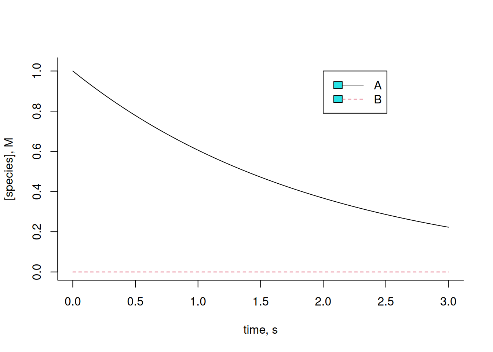
Experiment with varying the kinetic constant k, or the initial values for each compound, and observe the resulting effect. Metabolic reactions often present interconversions between compounds, such that a substrate of the reaction can also be configured as a product of catalysis of the same, and with kinetic rates of synthesis (k) and degradation (km, or k minus) for each compound, as follows:
\[ A \begin{array}{c} _{k}\\ \rightleftharpoons\\ ^{km} \end{array} B \tag{6}\]
In this case, the system of differential equations will be:
\[ dA=-k*A*dt+km*B*dt;\\ dB=k*A*dt-km*B*dt \tag{7}\]
Implementing the code snippet in
R:k <- 0.5
km <- 0.5 # kinetic constants of catalysis
dt <- .005
tmax <- 10 # time interval & maximum time
t <- seq(0, tmax, dt) # define time vector
n <- tmax / dt + 1 # define no. of points
x <- matrix(rep(0, 2 * n), nrow = 2, ncol = n) # build a matrix with one
# row for each compound, and one column for each time dt
x[1, 1] <- 1
x[2, 1] <- 1 # initial concentration values
for (i in 2:n) {
dA <- -k * x[1, i - 1] * dt + km * x[2, i - 1] * dt
dB <- k * x[1, i - 1] * dt - km * x[2, i - 1] * dt
x[1, i] <- x[1, i - 1] + dA
x[2, i] <- x[2, i - 1] + dB
# loop that adds to each interval dt the new concentration value for
# each compound
}
plot(t, x[1, ],
type = "l", lty = 1,
xlab = "time, s", ylab = "[species], M", ylim = c(0, 2), bty = "l"
) # graph of compound 1
lines(t, x[2, ], lty = 2, col = 2) # addition of graph of compound 2
legend(
x = 2, 5, y = 2, legend = c("A", "B"), col = c(1, 2), cex = 1,
lty = c(1, 2)
)
Note that the amounts of A and B remain constant throughout the interval. This is due to the identical values of the kinetic constants for each forward and reverse reaction, as well as the identical initial amounts for each compound. Illustrating a variation of these:
# Example of conversion A-->B
k <- 0.5
km <- 0.1 # kinetic constants of catalysis
dt <- .005
tmax <- 10 # time interval & maximum time
t <- seq(0, tmax, dt) # define time vector
n <- tmax / dt + 1 # define no. of points
x <- matrix(rep(0, 2 * n), nrow = 2, ncol = n) # build matrix of
# one row for each compound, and one column for each time dt
x[1, 1] <- 1
x[2, 1] <- 0.2 # initial concentration values
for (i in 2:n) {
dA <- -k * x[1, i - 1] * dt + km * x[2, i - 1] * dt
dB <- k * x[1, i - 1] * dt - km * x[2, i - 1] * dt
x[1, i] <- x[1, i - 1] + dA
x[2, i] <- x[2, i - 1] + dB
# loop that adds to each interval dt the new concentration value for
# each compound
}
plot(t, x[1, ],
type = "l", lty = 1,
xlab = "time, s", ylab = "[species], M", ylim = c(0, 2), bty = "l"
) # graph of compound 1
lines(t, x[2, ], lty = 2, col = 2) # addition of graph of compound 2
legend(x = 2, 5, y = 2, legend = c("A", "B"), col = c(1, 2), cex = 1, lty = c(1, 2))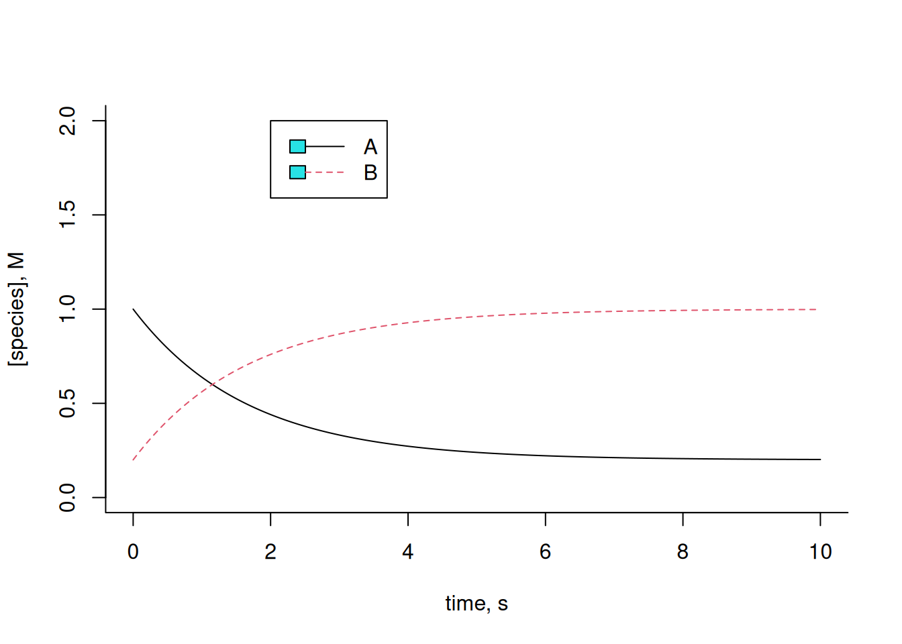
Now we can imagine a slightly more complex reaction, like the one illustrated in Equation 8:
\[ A \begin{array}{c} _{k1}\\ \rightleftharpoons\\ ^{km1} \end{array} B \begin{array}{c} _{k2}\\ \rightarrow \\ ^{}\end{array}C \tag{8}\]
In this case, the system of differential equations will be:
\[ dA=-k1*A*dt+km1*B*dt;\\ dB=k1*A*dt-km1*B*dt-k2*B*dt;\\ dC=k2*B \tag{9}\]
Implementing the code snippet:
# Euler solution for 3-compound kinetics
k1 <- 0.5
km1 <- 0.1
k2 <- 1 # kinetic constants of catalysis
dt <- .005
tmax <- 3 # time interval & maximum time
t <- seq(0, tmax, dt) # define time vector
n <- tmax / dt + 1 # define no. of points
x <- matrix(rep(0, 3 * n), nrow = 3, ncol = n) # build matrix of
# one row for each compound, and one column for each time dt
x[1, 1] <- 1
x[2, 1] <- 0
x[3, 1] <- 0 # initial concentration values
for (i in 2:n) {
dA <- -k1 * x[1, i - 1] * dt + km1 * x[2, i - 1] * dt
dB <- k1 * x[1, i - 1] * dt - (km1 + k2) * x[2, i - 1] * dt
dC <- k2 * x[2, i - 1] * dt
x[1, i] <- x[1, i - 1] + dA
x[2, i] <- x[2, i - 1] + dB
x[3, i] <- x[3, i - 1] + dC # loop that adds to each interval dt
# the new content value for each compound
}
plot(t, x[1, ],
type = "l", lty = 1,
xlab = "time, s", ylab = "[species], M", ylim = c(0, 1.025), bty = "l"
) # plot of compound 1
lines(t, x[2, ], lty = 2, col = 2) # add plot of compound 2
lines(t, x[3, ], lty = 3, col = 3) # add plot of compound 3
legend(x = 2, 5, y = 1, legend = c("A", "B", "C"), col = c(1, 2, 3),
cex = 1, lty = c(1, 2, 3))
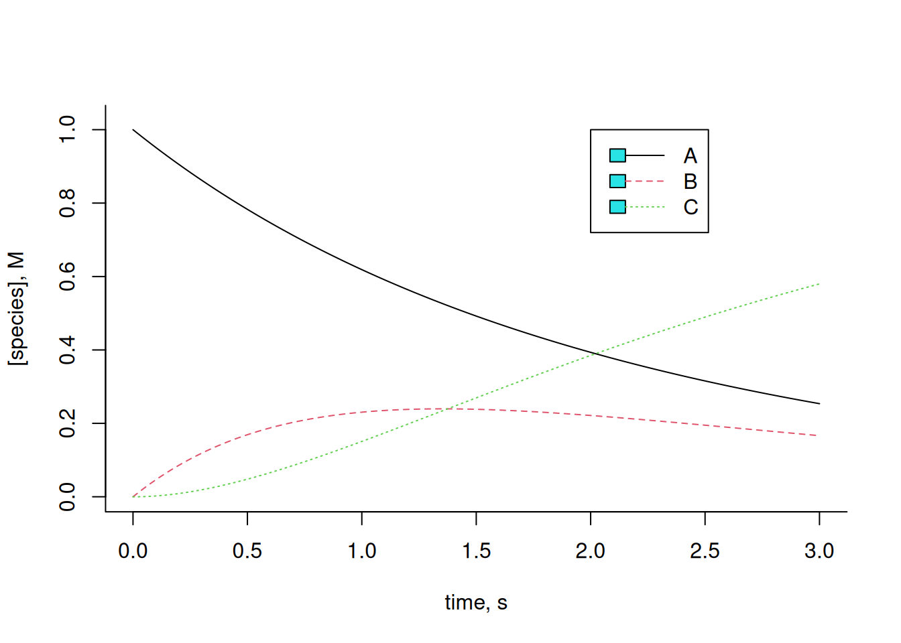
Note that the Equation 9 above reflects a Michaelis-Mentem catalysis, although considering the enzyme content E as constant and, therefore, independent of the reaction (zero order). And also note that the graph of Figure 1 translates, in a way, the Briggs-Haldane steady-state condition discussed in Enzymes. Note that the variation of B, reflected in this condition as the complex ES, remains relatively constant for a certain period of time, being produced by the collision with the enzyme E, and deconstructed both by its conversion to E + P (in this case, C), and by its reversion to E + S (in this case, A).
For a slightly more complex reaction:
\[ A \begin{array}{c} _{k1}\\ \rightleftharpoons\\ ^{km1} \end{array} B \begin{array}{c} _{k2}\\ \rightleftharpoons\\ ^{km2}\end{array}C \tag{10}\]
What does the following code snippet in
R suggest:# Euler solution for reversible kinetics of 3 compounds
# constants of the forward reaction
k1 <- 3
km1 <- 1
k2 <- 4
km2 <- 0.7
dt <- .005
tmax <- 10
t <- seq(0, tmax, dt)
n <- tmax / dt + 1
x <- matrix(rep(0, 3 * n), nrow = 3, ncol = n)
x[1, 1] <- 1
x[2, 1] <- 0
x[3, 1] <- 0
for (i in 2:n) {
dA <- -k1 * x[1, i - 1] * dt + km1 * x[2, i - 1] * dt
dB <- k1 * x[1, i - 1] * dt - (km1 + k2) * x[2, i - 1] * dt +
km2 * x[3, i - 1] * dt
dC <- k2 * x[2, i - 1] * dt - km2 * x[3, i - 1] * dt
x[1, i] <- x[1, i - 1] + dA
x[2, i] <- x[2, i - 1] + dB
x[3, i] <- x[3, i - 1] + dC
}
plot(t, x[1, ],
type = "l", lty = 1,
xlab = "time, s", ylab = "[species], mol/L",
ylim = c(0, 1.025), bty = "l"
)
lines(t, x[2, ], col = 2, lty = 2)
lines(t, x[3, ], col = 3, lty = 3)
legend(x = 8, y = 0.6, legend = c("A", "B", "C"), col = c(1, 2, 3),
cex = 1, lty = c(1, 2, 3))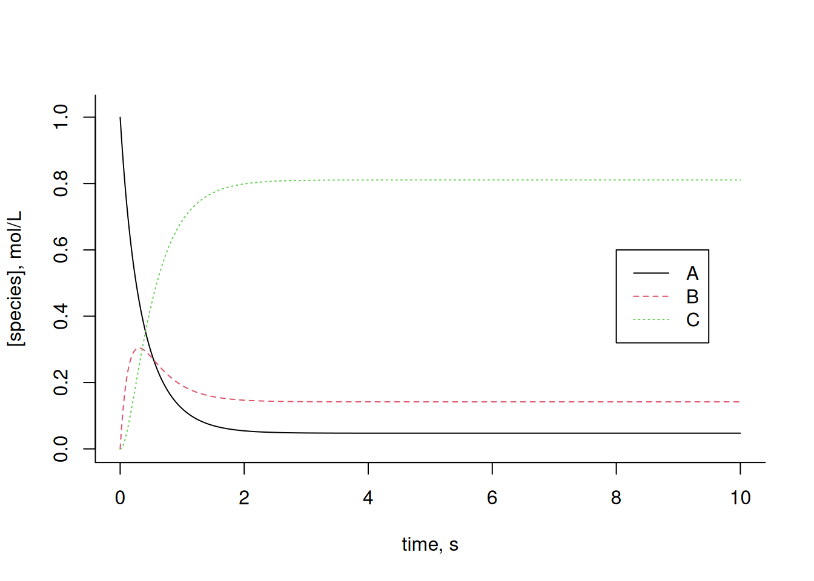
Now, suppose a more complex chain of biochemical reactions, with negative (inhibition, ki) and positive (activation, ka) allosteric modulators for certain enzymes. The example below illustrates this situation:
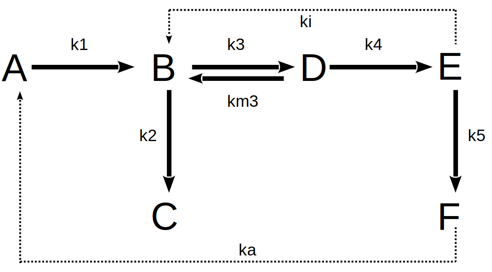
Thus, the set of reactions in the metabolic network above can be equated as:
\[ dA=-k1*A*dt+ka*F*dt;\\ dB=k1*A*dt+km3*D*dt-k3*B*dt-k2*B*dt-ki*E*dt;\\ dC=k2*B*dt;\\ \tag{11}\]
\[ dD=k3*B*dt-km3*D*dt-k4*D*dt;\\ dE=k4*D*dt-k5*E*dt;\\ dF=k5*E*dt-ka*F*dt \tag{12}\]
The following code snippet can be written for the numerical Euler solution involving the differential equations listed above as:
# Solution for metabolic pathway with allosteric inhibition and activation
# Kinetic and allosteric constants
k1 <- 2
k2 <- 0.5
k3 <- 0.7
km3 <- 0.3
k4 <- 5
k5 <- 1
ki <- 0.3 # inhibition constant
ka <- 0.2 # activation constant
dt <- .005
tmax <- 10
t <- seq(0, tmax, dt)
n <- tmax / dt + 1
x <- matrix(rep(0, 6 * n), nrow = 6, ncol = n)
# Initial values of compounds
x[1, 1] <- 1
x[2, 1] <- 0
x[3, 1] <- 0
x[4, 1] <- 1
x[5, 1] <- 0
x[6, 1] <- 0
for (i in 2:n) {
# system of equations inserted into the interval matrix
dA <- -k1 * x[1, i - 1] * dt + ka * x[6, i - 1] * dt
dB <- k1 * x[1, i - 1] * dt + km3 * x[4, i - 1] * dt - k3 *
x[2, i - 1] * dt - k2 * x[2, i - 1] * dt - ki * x[1, i - 1] * dt
dC <- k2 * x[2, i - 1] * dt
dD <- k3 * x[2, i - 1] * dt - km3 * x[4, i - 1] * dt - k4 *
x[4, i - 1] * dt
dE <- k4 * x[4, i - 1] * dt - k5 * x[5, i - 1] * dt
dF <- k5 * x[5, i - 1] * dt - ka * x[6, i - 1] * dt
# Adding dy to y values
x[1, i] <- x[1, i - 1] + dA
x[2, i] <- x[2, i - 1] + dB
x[3, i] <- x[3, i - 1] + dC
x[4, i] <- x[4, i - 1] + dD
x[5, i] <- x[5, i - 1] + dE
x[6, i] <- x[6, i - 1] + dF
}
# Preparation of kinetic graphs
plot(t, x[1, ],
type = "l", lty = 1,
xlab = "time,s", ylab = "[species], mol/L",
ylim = c(0, 1.025), bty = "l"
)
lines(t, x[2, ], col = 2, lty = 2)
lines(t, x[3, ], col = 3, lty = 3)
lines(t, x[4, ], col = 4, lty = 4)
lines(t, x[5, ], col = 5, lty = 5)
lines(t, x[6, ], col = 6, lty = 6)
legend(x = 6.5, y = 0.65, legend = c("A", "B", "C", "D", "E", "F"),
col = c(1, 2, 3, 4, 5, 6), cex = 1, lty = c(1, 2, 3, 4, 5, 6))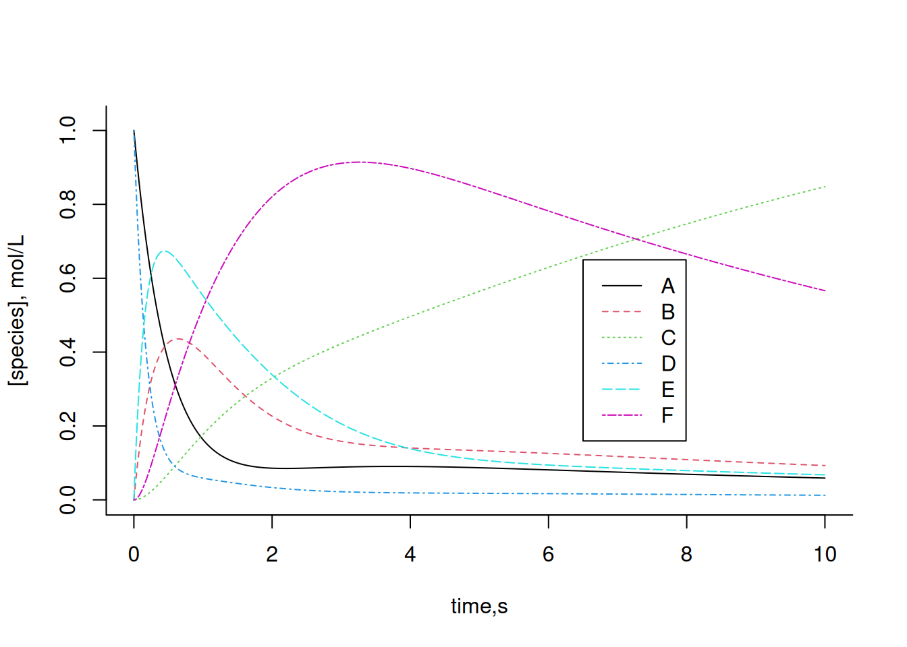
Change the kinetic and/or allosteric constants of the system above and observe the effect on each of the compounds. In general, the Euler solution applied to systems of increasing complexity, such as a metabolic network, may present deviations centered on the selection of the value of dt, or even produce inconsistent values. To get around this situation, other algorithms are used, such as 2nd, 3rd, or 4th order Runge-Kutta, present in
R packages, or even by systems analysis.Some reactions of glucose metabolism
For a 4th order Runge-Kutta method, it is necessary to install the
deSolve package or similar to solve a system of 1st order ordinary differential equations or partial differential equations. The library aggregates functions that allow a leaner and simpler code for solving the system. Illustrating its application, here are some of the many simple relationships of the metabolic network that involves glycolysis, gluconeogenesis, and pentose pathway in cells:
The following metabolic reactions can be attributed to these relationships:
\[ G6P \begin{array}{c} _{k1}\\ \rightarrow \\ ^{}\end{array} R5P\\ G3P+DHCP \begin{array}{c} _{k2}\\ \rightarrow \\ ^{}\end{array} PEP\\ 2G3P \begin{array}{c} _{k3}\\ \rightarrow \\ ^{}\end{array} 6GP\\ R5P \begin{array}{c} _{k4}\\ \rightarrow \\ ^{}\end{array} G3P\\ 2PEP \begin{array}{c} _{k5}\\ \rightarrow \\ ^{}\end{array} G6P \tag{13}\]
The code snippet for the Runge-Kutta solution can be the following example, with results in two graphs; initially with the curves isolated, and then combined.
library(deSolve)
# Solution for conversion kinetics in some metabolic pathways
# Reaction parameters
k1 <- 0.1
k2 <- 0.5
k3 <- 0.05
k4 <- 0.5
k5 <- 0.2
parms <- c(k1, k2, k3, k4, k5)
# Initial values for each compound
G6P0 <- 1
R5P0 <- 0
G3P0 <- 0.3
DHCP0 <- 0.1
PEP0 <- 0
# Time interval
tmin <- 0
tmax <- 20
dt <- 0.01
time <- seq(tmin, tmax, dt)
# Function for the derivatives of the species in time
eq.dif <- function(time, x, parms) {
# compound specification
G6P <- x[1]
R5P <- x[2]
G3P <- x[3]
DHCP <- x[4]
PEP <- x[5]
# differential equations
dG6P <- -k1 * G6P + k3 * G3P^2 + k5 * PEP^2
dR5P <- k1 * G6P - k4 * R5P
dG3P <- -k2 * G3P * DHCP - k3 * G3P^2 + k4 * R5P
dDHCP <- -k2 * G3P * DHCP
dPEP <- k2 * G3P * DHCP - k5 * PEP^2
list(c(dG6P, dR5P, dG3P, dDHCP, dPEP)) # increments of species
}
# lsoda routine for ordinary differential solution
out <- lsoda(c(G6P0, R5P0, G3P0, DHCP0, PEP0), time, eq.dif, parms,
rtol = 1e-4, atol = 1e-6
)
# Output the result in vectors for each quantity (time and species)
t <- out[, 1]
G6P <- out[, 2]
R5P <- out[, 3]
G3P <- out[, 4]
DHCP <- out[, 5]
PEP <- out[, 6]
# Graphing vertical
par(mfrow = c(1, 5))
plot(t, G6P, type = "l")
plot(t, R5P, type = "l")
plot(t, G3P, type = "l")
plot(t, DHCP, type = "l")
plot(t, PEP, type = "l")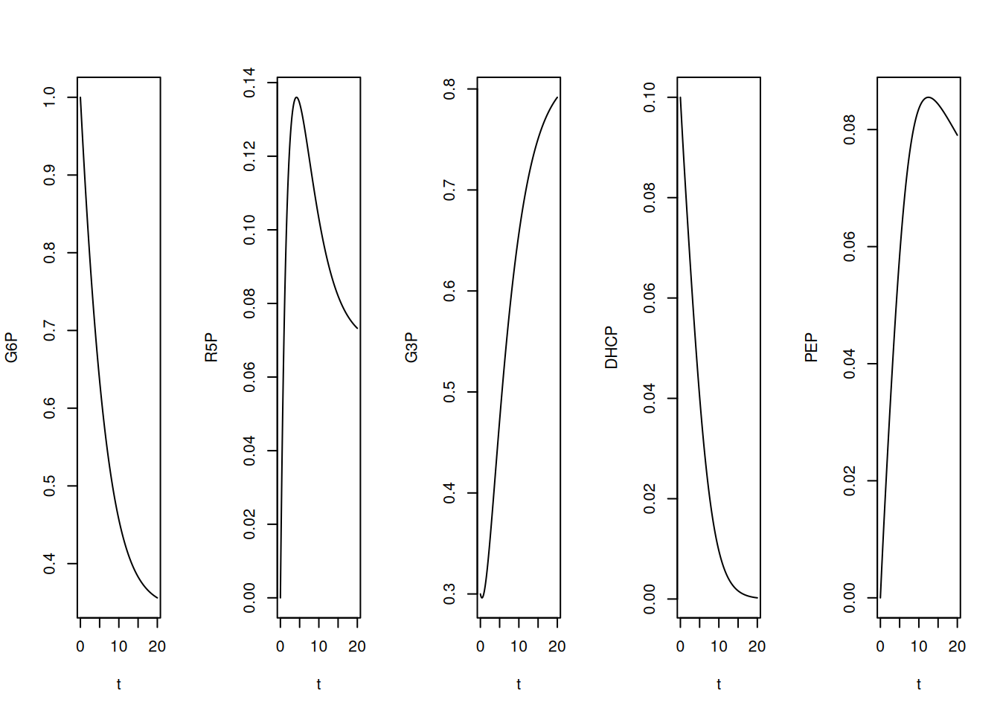
# Preparation of graph with all species
par(mfrow = c(1, 1))
plot(t, G6P, type = "l", col = 1, lty = 1, ylab = "[species]",
ylim = c(0, 1))
lines(t, R5P, type = "l", col = 2, lty = 2)
lines(t, G3P, type = "l", col = 3, lty = 3)
lines(t, DHCP, type = "l", col = 4, lty = 4)
lines(t, PEP, type = "l", col = 5, lty = 5)
legend(x = 10, y = 1, legend = c("G6P", "R5P", "G3P", "DHCP", "PEP"),
col = c(1, 2, 3, 4, 5), cex = 1, lty = c(1, 2, 3, 4, 5))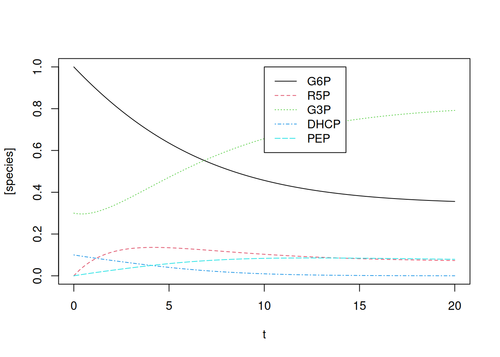
Note that, by the quantities offered to the simulation, that is, kinetic constants and initial values, G3P and PEP register a significant interval in elevation, also coincident with their presence in several of the relations of Equation 13.
Kinetics of 6-mercaptopurine metabolism
Raising the complexity of metabolic networks a little, we can illustrate the cellular metabolism of 6-mercaptopurine (6-MP) as a function of cellular ATP content (Lavrova et al. 2017). As a purine antagonist, the drug is used in chemotherapy for the treatment of lymphocytic leukemia, interrupting cell growth, although it produces cytotoxic side effects arising from reactions with the thiol group.
Figure 2 represents a simplified scheme of the metabolism of 6-MP. The concentrations of the species and kinetic constants originate from the concentration values in \(\mu\)mol/mL, and time in days.
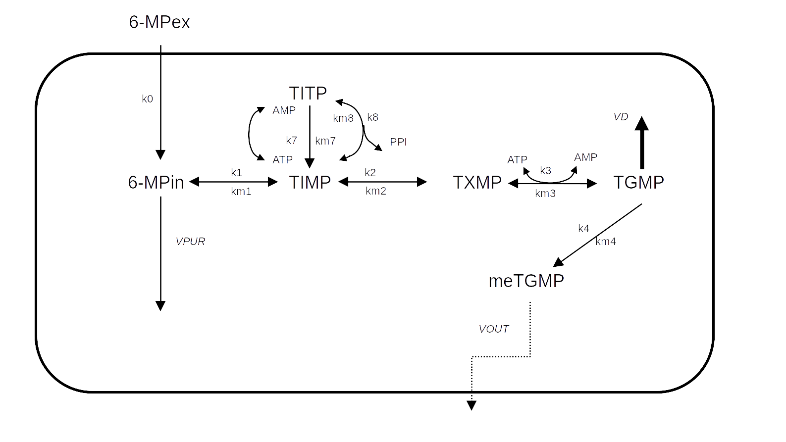
For the 10 reactions related to the ODEs that make up the representation of 6-MP metabolism (Lavrova et al. 2017), the code snippet below implements the 4th order Runge-Kutta solution by the
lsoda function:# Degradation of 6-mercaptopurine and Runge-Kutta solution
library(deSolve)
# Parameters
k0 <- 5
k1 <- 10
k2 <- 10
k3 <- 5
k4 <- 1e-5
k7 <- 0.01
k8 <- 0.5
km7 <- 1
km1 <- 0.01
km2 <- 4
km3 <- 0.01
km4 <- 0.1
km8 <- 0.01
VPUR <- 0.01
VD <- 0.9
VOUT <- 1e-4
# Parameter list
parms <- c(k0, k1, k2, k3, k4, k7, k8, km7, km1, km2, km3, km4, km8,
VPUR, VD, VOUT)
# compound specification
MPex <- x[1]
MPin <- x[2]
TIMP <- x[3]
TXMP <- x[4]
TGMP <- x[5]
meTGMP <- x[6]
TITP <- x[7]
ATP <- x[8]
AMP <- x[9]
PP <- x[10]
# initial concentrations of species
reag0 <- c(MPex0 = 0.68, MPin0 = 0, TIMP0 = 0, TXMP0 = 0, TGMP0 = 0,
meTGMP0 = 0, TITP0 = 0, ATP0 = 0.2, AMP0 = 0, PP0 = 0)
# time interval definition
tmin <- 0
tmax <- 2
dt <- 0.01
time <- seq(tmin, tmax, dt)
# Function for the derivatives of each species
eq.dif <- function(time, x, parms) {
# Parameter definition
MPex <- x[1]
MPin <- x[2]
TIMP <- x[3]
TXMP <- x[4]
TGMP <- x[5]
meTGMP <- x[6]
TITP <- x[7]
ATP <- x[8]
AMP <- x[9]
PP <- x[10]
# Differential equations
dMPex <- -k0 * MPex
dMPin <- -(VPUR + k1) * MPin + k0 * MPex + km1 * TIMP
dTIMP <- k1 * MPin + km8 * TITP - (k2 + k7 * ATP + km1 + k8 * PP) *
TIMP + km2 * TXMP + km7 * TITP * AMP
dTXMP <- k2 * TIMP - k3 * TXMP * ATP - km2 * TXMP + km3 * TGMP *
AMP * PP
dTGMP <- k3 * TXMP * ATP - (k4 + VD) * TGMP - km3 * TGMP * AMP *
PP + km4 * meTGMP
dmeTGMP <- k4 * TGMP - VOUT * meTGMP - km4 * meTGMP
dTITP <- k8 * TIMP * PP - km8 * TITP + k7 * TIMP * ATP - km7 *
TITP*AMP
dATP <- -k7 * TIMP * ATP + km3 * TGMP * AMP * PP - k3 * TXMP *
ATP + km7 * TITP * AMP
dAMP <- -km3 * TGMP * AMP * PP + k3 * TXMP * ATP + k7 * TIMP *
ATP - km7 * TITP * AMP
dPP <- -k8 * TIMP * PP + km8 * TITP - km3 * TGMP * AMP * PP + k3 *
TXMP * ATP
list(c(dMPex, dMPin, dTIMP, dTXMP, dTGMP, dmeTGMP, dTITP, dATP,
dAMP, dPP)) # list of differential values for each species
}
# lsoda routine for solving differential equations ordinary
sol.eq <- lsoda(reag0, time, eq.dif, parms,
rtol = 1e-4, atol = 1e-6
)
# Isolating the result columns
t <- sol.eq[, 1]
MPex <- sol.eq[, 2]
MPin <- sol.eq[, 3]
TIMP <- sol.eq[, 4]
TXMP <- sol.eq[, 5]
TGMP <- sol.eq[, 6]
meTGMP <- sol.eq[, 7]
TITP <- sol.eq[, 8]
ATP <- sol.eq[, 9]
AMP <- sol.eq[, 10]
PP <- sol.eq[, 11]
# Creating the graph
plot(t, MPex, type = "l", xlab = "tempo, days",
ylab = "[species], umol/L")
lines(t, MPin, type = "l", col = 2, lty = 2)
lines(t, TIMP, type = "l", col = 3, lty = 3)
lines(t, TXMP, type = "l", col = 4, lty = 4)
lines(t, TGMP, type = "l", col = 5, lty = 5)
lines(t, meTGMP, type = "l", col = 6, lty = 6)
lines(t, TITP, type = "l", col = 7, lty = 7)
lines(t, ATP, type = "l", col = 8, lty = 8)
lines(t, AMP, type = "l", col = 9, lty = 9)
lines(t, PP, type = "l", col = 10, lty = 10)
legend(x = 1.5, y = 0.65, legend = c("MPex", "MPin", "TIMP", "TXMP",
"TGMP", "meTGMP", "TITP", "ATP",
"AMP", "PP"), col = c(1, 2, 3, 4,
5, 6, 7, 8,
9, 10),
cex = 0.7, lty = c(1, 2, 3, 4, 5, 6, 7, 8, 9, 10))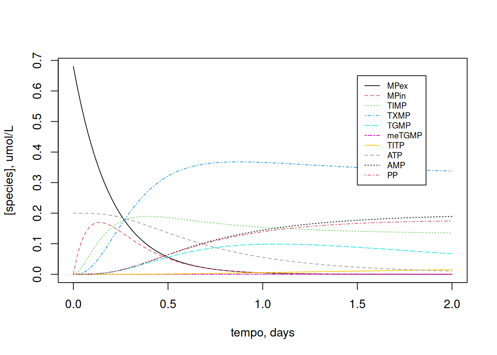
Since the dynamics of variation of the compounds is dependent on the initial cellular ATP content, try varying this initial value (e.g.: ATP0=2):
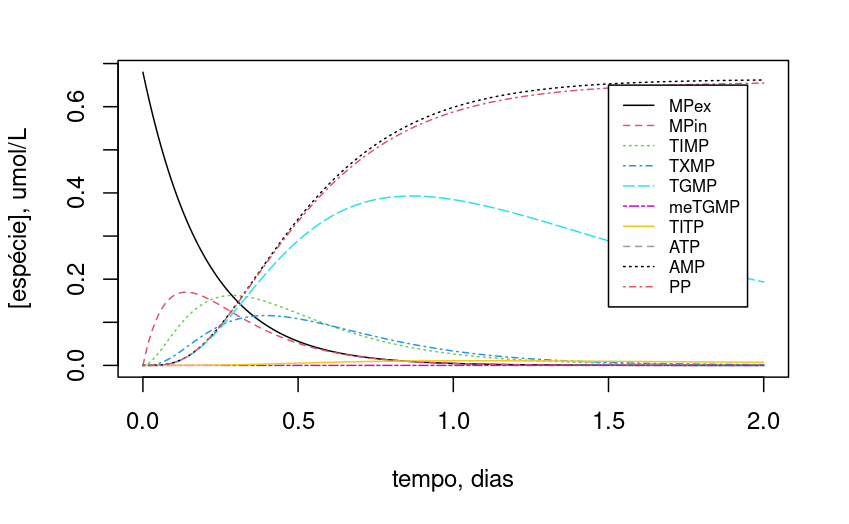
Note that, with the 10x reduction in ATP content, TGMP and TIMP maintained more stable levels throughout the period.
References
Lavrova, Anastasia I, Eugene B Postnikov, Andrey Yu Zyubin, and Svetlana V Babak. 2017. “Ordinary Differential Equations and Boolean Networks in Application to Modelling of 6-Mercaptopurine Metabolism.” Royal Society Open Science 4 (4): 160872.